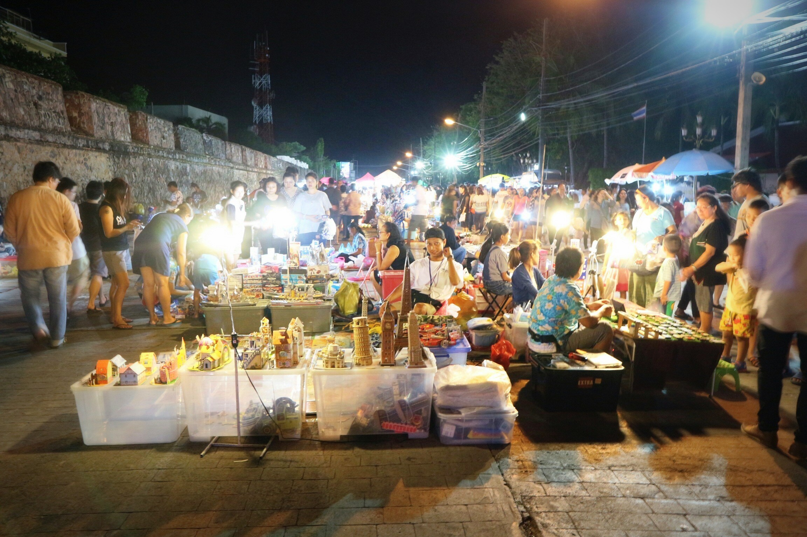
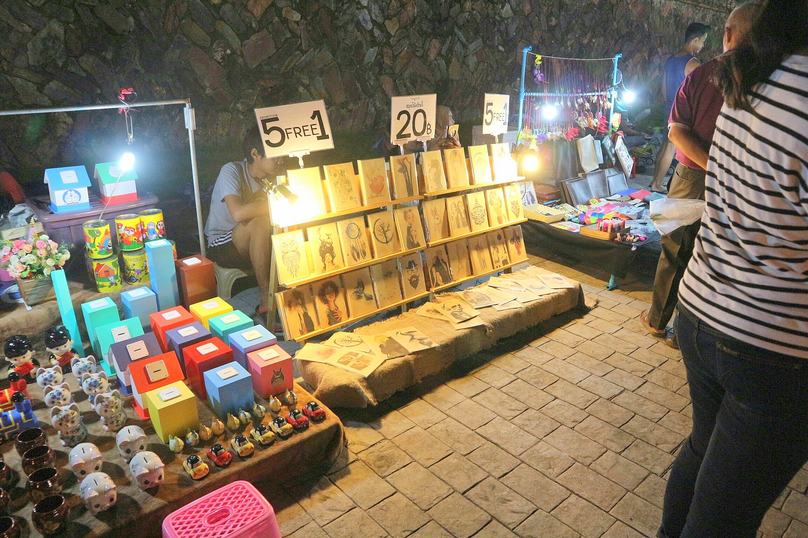
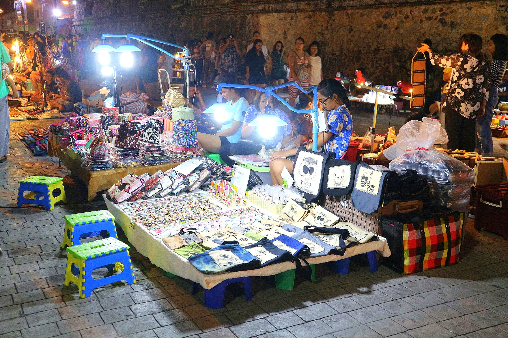
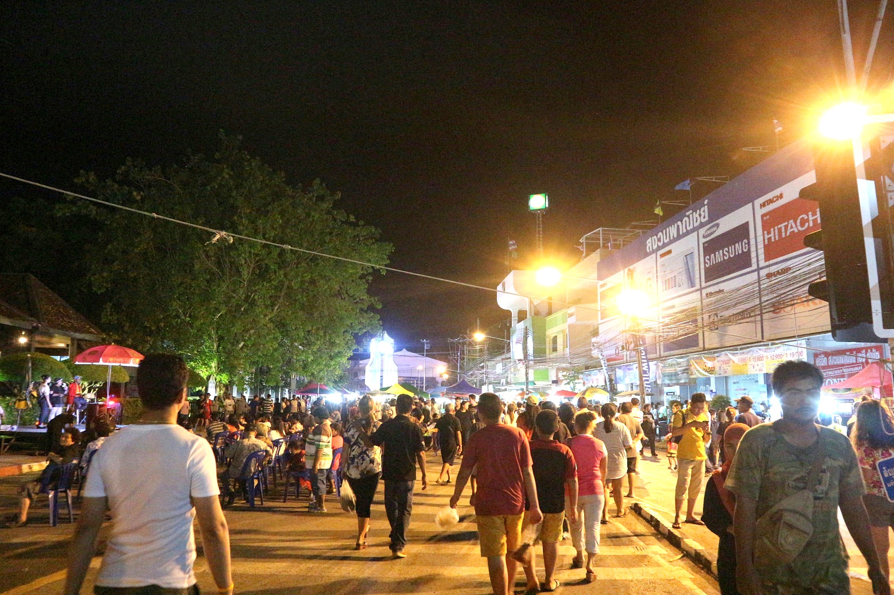
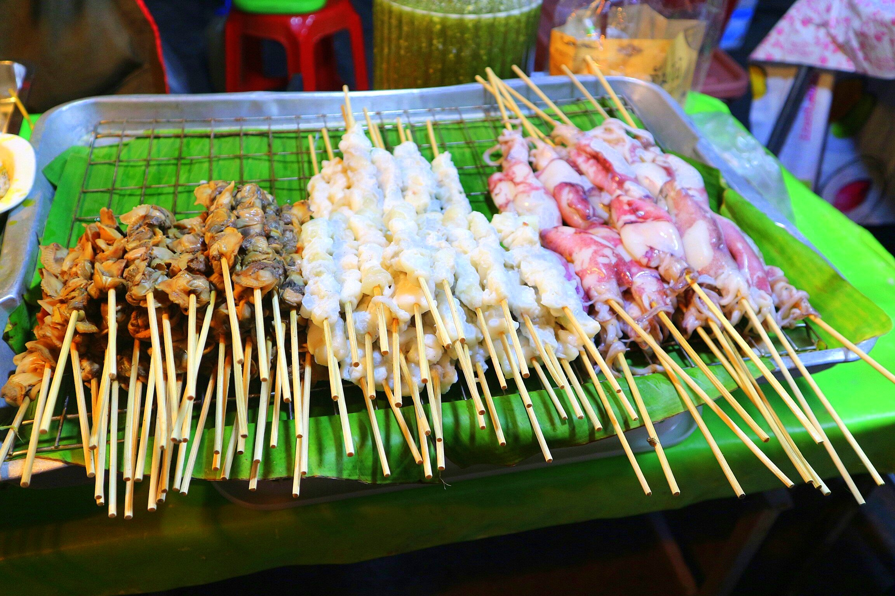
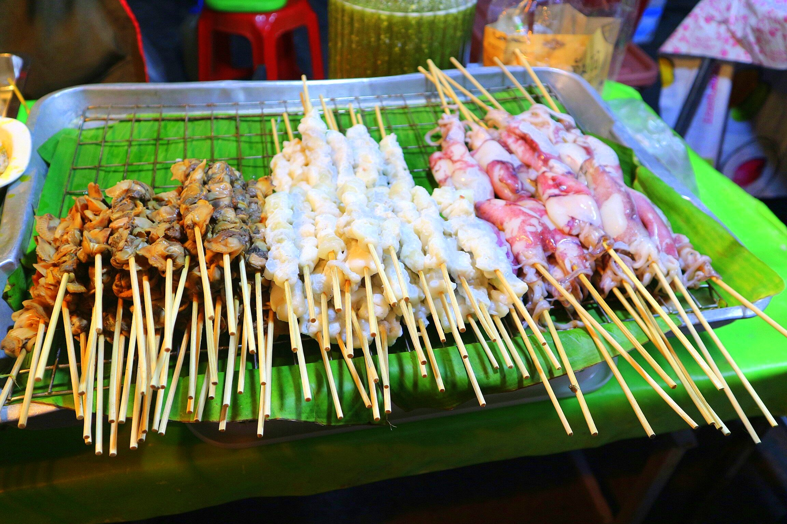

ถนนคนเดินสงขลาแต่แรก
เพลินกินของหรอย ย้อนรอยบ่อยาง
ความประทับใจ
ถนนคนเดินสงขลาจะจัดขึ้นในช่วงเวลาค่ำคืน เป็นสถานที่ที่มีของมากมายให้เลือกซื้อ เลือกชม ไม่ว่าจะเป็นของกินอร่อยหลายๆอย่าง ของกินขึ้นชื่อของเมืองสงขลา อาหารพื้นบ้านที่หาซื้อได้ยาก ของฝากน่ารักๆ เสื้อผ้าสวยๆราคาจับต้องได้ รวมถึงของเก่าๆโบราณด้วย จะเห็นได้ว่ามีคนไปเที่ยวเยอะมากทุกเพศทุกวัย นอกจากจะมีของกินที่อร่อยแล้วก็ยังมีการแสดงบริเวณหน้าพิพิธภัณฑ์พธำมะรงค์ หรือบ้านของตระกูลติณสูลานนท์ เพื่อให้ประชาชนร่วมแสดง ร่วมร้องเพลงกันอย่างสนุกสานท่ามกลางบรรยากาศเวลาค่ำคืนที่มีแสงไฟประดับสวยงาม เมื่อเดินไปเรื่อยๆ ก็จะเจอกับการแสดงของน้องๆนักเรียนนักศึกษาที่มาโชว์เพื่อหาเงินเข้าชมรม มีหนังตะลุงให้ดูกันฟรี ๆ ใครใจดีก็ช่วยบริจาคก็ว่ากันไป ถือได้ว่าไปเที่ยวที่เดียวได้ครบทุกรสชาติทุกอารมณ์กันเลยทีเดียวไม่ว่าจะอิ่มท้อง เพลิดเพลินการแสดง แล้วยังได้ร่วมสมทบทุนทำกิจกรรมดีๆอีกด้วย
ภาพบรรยากาศ
   
 
